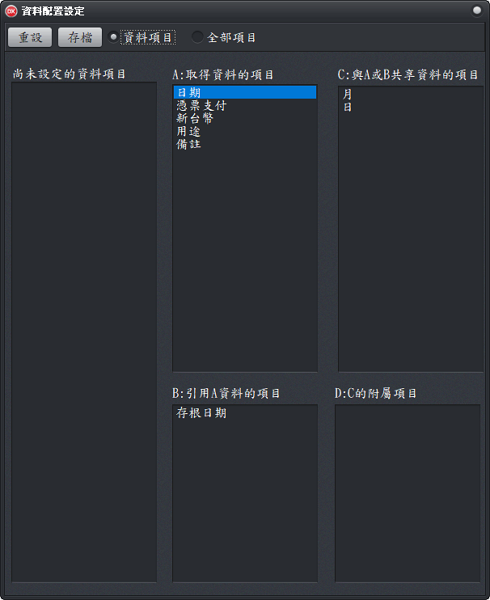

資料配置設定
這裏用於指定資料字串類型的套印項目，於套印時要如何取得、分配及共享資料，設定說明如下：

資料配置設定視窗
- 工具列說明：
- 重設：清空所有設定，套印項目只出現在「尚未設定的資料項目」
- 存檔：資料項目設定完成確認無誤後，可先存檔。
- 資訊項目選項：有設定資料分配後就會從「尚未設定的資料項目」移除。
- 全部項目選項：無論有無設定資料分配，都會出現在「尚未設定的資料項目」。
- 資料項目配置區域說明：
- A.取得資料項目：此區域的資料項目是直接取得使用者輸入或匯入的資料，也是預設的方式。
- B.引用A資料的項目：從「A.取得資料項目」引用資料。例如同一文件有多個位置需要套印日期，而使用者只需輸入1次，這個區域的資料項目，就可以引用該資料。
- C.與A或B共享資料項目：可與「A.取得資料項目」或「B.引用A資料的項目」分享資料，例如將日期切割為年(日期本身使用)、月、日。
- D.C的附屬項目：為增加設定的彈性，及提高軟體的維護性，可由「輸入介面設定」視窗實現相關功能。
- 資料項目移動方式：
- 「尚未設定的資料項目」移動至指定的區域：
- 由「尚未設定的資料項目」將指定的資料項目，直接用滑鼠左鍵按住不放托托到指定的區域。
- A、B、C是有順序性的，有A才可以設定B或C。
- 同區域資料項目改變順序：用滑鼠左鍵按住後，直接托到指定的位置即可。
- 刪除已設定的資料項目：請直接在該項目上面，用滑鼠左鍵快點2下，即可將項目從取得、共享、引用區域內移除。